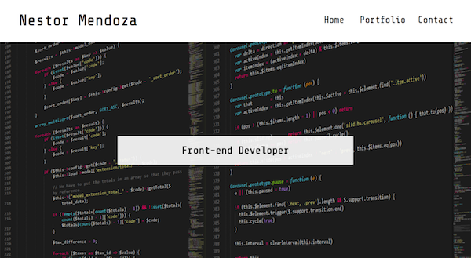
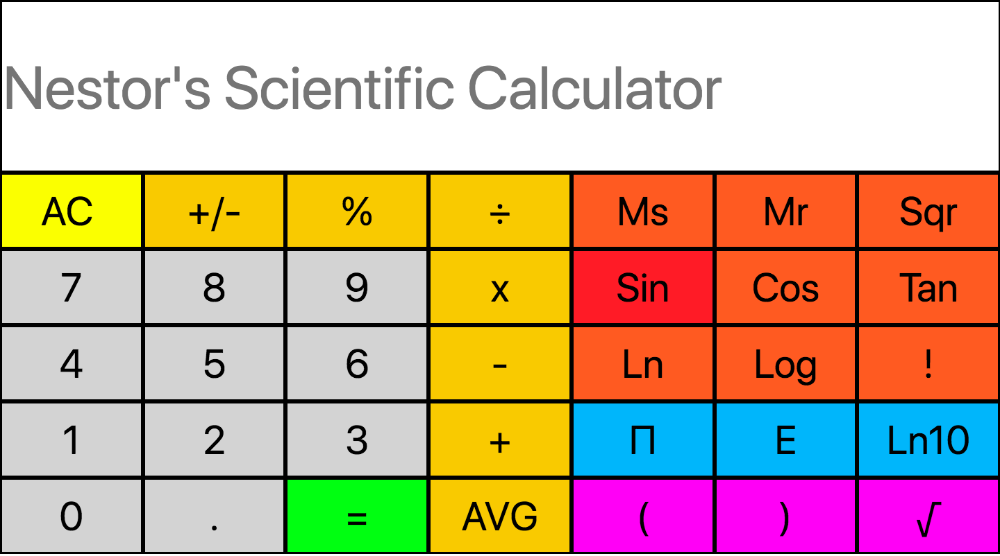
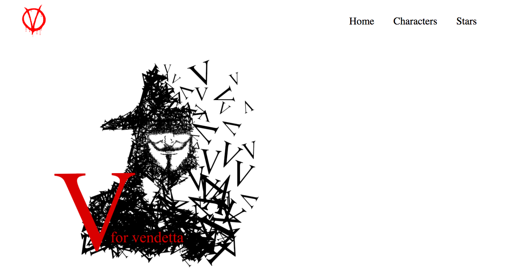
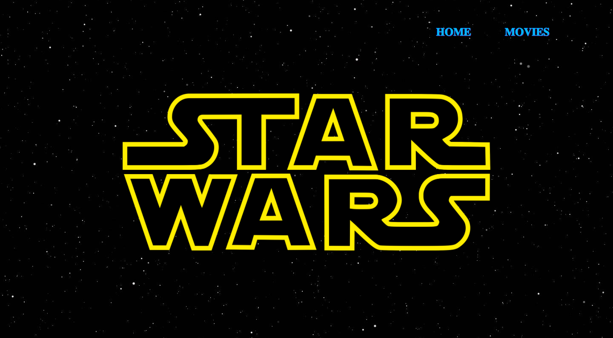
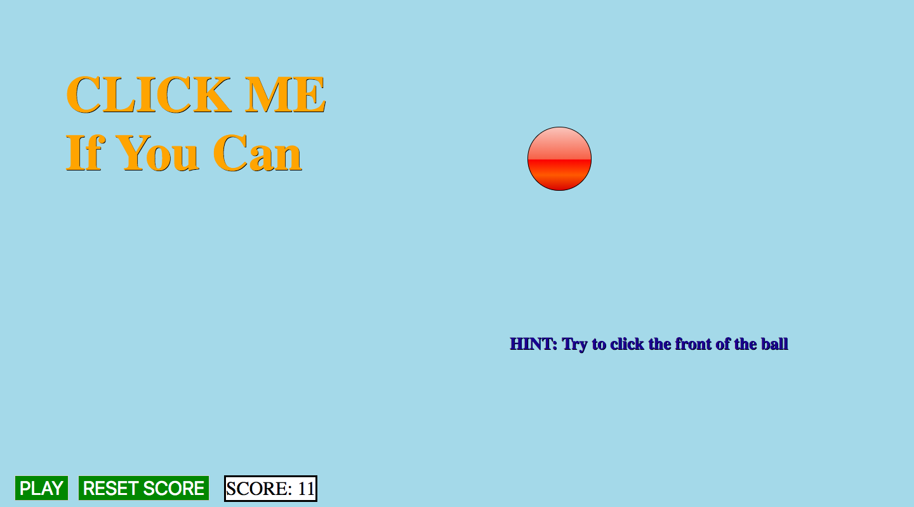
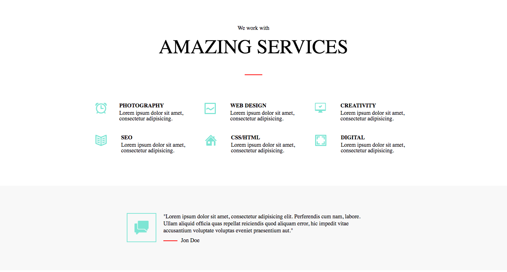
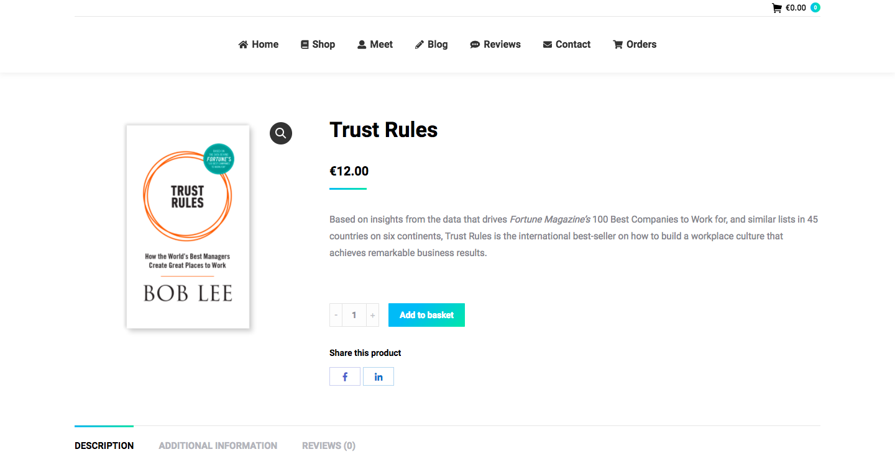

|

In 2017, I took the Front End Development course at General Assembly. |
|

I grew up using one of these things... |
|

I've used Star Wars already, so I needed to do something different... |
|

We were asked to make an announcement website for a movie... |
|

This one wasn't as fun as it is to play... |
|

For this one I didn't need to design... |
|

Wordpress is different.. |